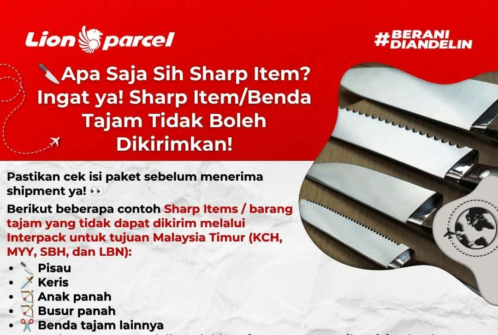

Sharp Item Lion Parcel: Ketentuan Pengiriman Benda Tajam ke Malaysia Timur

Dalam kegiatan pengiriman paket, tidak semua jenis barang dapat diterima untuk setiap tujuan dan layanan ekspedisi. Ada sejumlah komoditas yang memiliki batasan khusus karena berkaitan dengan keamanan transportasi, proses pemeriksaan, serta ketentuan pengiriman di negara tujuan.
Salah satu kategori yang perlu diperhatikan adalah Sharp Items atau benda tajam. Kategori ini menjadi perhatian khusus bagi pelanggan yang ingin mengirimkan barang melalui layanan Interpack Lion Parcel dengan tujuan Malaysia Timur.
Berdasarkan pengumuman operasional Interpack, pengiriman kategori Sharp Items tidak diperbolehkan untuk tujuan Malaysia Timur. Oleh karena itu, pengirim perlu memastikan isi paket sebelum menyerahkannya kepada agen Lion Parcel.
Ingin Memastikan Barang Anda Bisa Dikirim?
Konsultasikan jenis barang, kota tujuan, dan layanan pengiriman terlebih dahulu bersama Lion Parcel Bandung POS101 Rancaekek.
💬 Konsultasi via WhatsApp1. Apa yang Dimaksud dengan Sharp Items?
Sharp Items merupakan istilah bahasa Inggris yang digunakan untuk menyebut barang atau benda dengan bagian tajam, runcing, atau berpotensi melukai ketika ditangani. Dalam aktivitas logistik, barang dengan karakteristik tersebut memerlukan perhatian khusus karena dapat membahayakan petugas, merusak kemasan, atau menimbulkan risiko selama proses pengangkutan.
Beberapa contoh barang yang termasuk dalam kategori benda tajam antara lain:
- Pisau: Pisau dapur, pisau lipat, pisau berburu, dan jenis pisau lainnya.
- Keris: Senjata tradisional yang memiliki bilah tajam.
- Pedang: Berbagai jenis pedang dan senjata bermata tajam.
- Cutter: Pisau pemotong dan perlengkapan dengan mata pisau terbuka atau dapat diganti.
- Gunting: Peralatan pemotong dengan ujung atau bagian tajam.
- Anak panah: Anak panah dengan ujung runcing.
- Peralatan tajam lainnya: Barang sejenis yang memiliki bagian runcing atau berpotensi melukai.
Daftar tersebut merupakan contoh untuk membantu mengenali karakteristik Sharp Items, bukan daftar resmi lengkap seluruh komoditas yang ditolak. Penentuan penerimaan barang tetap mengikuti klasifikasi dan ketentuan operasional Lion Parcel.
📍 Lion Parcel Bandung POS101 Nanjungmekar
Jl. Raya Barat Cicalengka RT 1 RW 1, Nanjung Mekar, Rancaekek, Kabupaten Bandung, Jawa Barat.
2. Apakah Sharp Items Bisa Dikirim ke Malaysia Timur?
Untuk layanan Interpack dengan tujuan Malaysia Timur, kategori Sharp Items tidak diperbolehkan dikirimkan berdasarkan pengumuman operasional yang disampaikan kepada mitra Lion Parcel.
Wilayah tujuan yang perlu diperhatikan dalam ketentuan ini meliputi kode kota berikut:
- KCH: Kuching.
- MYY: Miri.
- SBH: Kota Kinabalu dan wilayah Sabah sesuai cakupan kode tujuan.
- LBN: Labuan.
Apabila paket berisi pisau, keris, atau benda lain yang masuk kategori Sharp Items, pengirim sebaiknya tidak langsung melakukan pengiriman ke tujuan tersebut. Lakukan pengecekan terlebih dahulu kepada petugas atau tim Interpack untuk memastikan klasifikasi barang.
Catatan: Ketentuan ini membahas pembatasan khusus layanan Interpack untuk Malaysia Timur. Jangan menganggap bahwa seluruh barang tajam otomatis memiliki aturan yang sama untuk semua layanan dan rute pengiriman Lion Parcel. Setiap tujuan dapat memiliki ketentuan tersendiri.
3. Mengapa Benda Tajam Dibatasi dalam Pengiriman?
Pembatasan benda tajam bertujuan menjaga keamanan selama proses pengiriman. Paket akan melalui beberapa tahapan, mulai dari penerimaan di agen, penyortiran, pemindahan, hingga pengangkutan menuju kota atau negara tujuan.
Beberapa risiko yang perlu diperhatikan antara lain:
- Risiko melukai petugas: Bagian tajam dapat melukai petugas ketika paket dipindahkan atau diperiksa.
- Merusak kemasan: Ujung benda tajam dapat menembus kardus atau kemasan pelindung.
- Risiko keselamatan transportasi: Barang tertentu dapat memerlukan pemeriksaan dan penanganan khusus sesuai ketentuan moda transportasi.
- Ketentuan negara tujuan: Setiap negara maupun wilayah tujuan dapat memiliki aturan impor dan pembatasan komoditas yang berbeda.
4. Tips Sebelum Mengirim Barang ke Luar Negeri
Agar proses pengiriman berjalan lebih lancar, berikut beberapa langkah yang dapat dilakukan sebelum mengirim paket melalui layanan internasional Lion Parcel:
- Kenali isi paket. Pastikan jenis barang, bahan, fungsi, dan karakteristiknya diketahui dengan jelas.
- Periksa ketentuan barang terlarang. Pastikan barang tidak termasuk komoditas yang dilarang untuk layanan dan negara tujuan.
- Sampaikan informasi dengan jujur. Jangan menyembunyikan atau mengubah keterangan isi paket untuk menghindari pemeriksaan.
- Konfirmasi sebelum melakukan pengiriman. Jika barang memiliki bagian tajam, komponen berbahaya, atau karakteristik khusus, tanyakan terlebih dahulu kepada petugas.
- Gunakan kemasan yang sesuai. Barang yang memang diperbolehkan harus dikemas dengan aman sesuai instruksi layanan pengiriman.
5. Konsultasi Pengiriman Lion Parcel Bandung POS101 Rancaekek
Bagi masyarakat Rancaekek, Nanjungmekar, Cicalengka, dan sekitarnya yang ingin mengirim paket domestik maupun internasional, Lion Parcel POS101 dapat membantu memberikan informasi awal mengenai layanan dan ketentuan pengiriman.
Anda dapat menyampaikan informasi mengenai jenis barang, berat paket, dimensi, serta alamat tujuan agar petugas dapat membantu melakukan pengecekan sesuai ketentuan operasional yang berlaku.
Butuh Informasi Pengiriman?
Hubungi Lion Parcel Bandung POS101 untuk konsultasi layanan dan pengecekan ketentuan barang kiriman.
💬 WhatsApp 0851-8309-04866. Pertanyaan Umum Seputar Sharp Items Lion Parcel
1. Apa arti Sharp Items dalam pengiriman paket?
Sharp Items adalah istilah untuk benda tajam atau barang yang memiliki bagian runcing dan berpotensi melukai, seperti pisau, keris, cutter, dan benda sejenis.
2. Apakah pisau boleh dikirim melalui Interpack ke Malaysia Timur?
Kategori Sharp Items tidak diperbolehkan untuk tujuan Malaysia Timur berdasarkan pengumuman operasional Interpack. Pastikan melakukan konfirmasi apabila klasifikasi barang belum jelas.
3. Kota mana saja yang termasuk tujuan Malaysia Timur dalam ketentuan ini?
Kode tujuan yang disebutkan dalam informasi operasional adalah KCH, MYY, SBH, dan LBN.
4. Apakah semua benda tajam dilarang untuk seluruh layanan Lion Parcel?
Artikel ini membahas pembatasan Sharp Items pada layanan Interpack dengan tujuan Malaysia Timur. Ketentuan untuk layanan dan tujuan lainnya perlu diperiksa secara terpisah.
5. Bagaimana cara memastikan barang saya bisa dikirim?
Sampaikan jenis barang dan alamat tujuan kepada petugas Lion Parcel untuk mendapatkan pengecekan berdasarkan ketentuan layanan yang berlaku.
Kesimpulan
Sharp Items atau benda tajam merupakan kategori barang yang perlu mendapat perhatian khusus dalam proses pengiriman. Berdasarkan pengumuman operasional Interpack, kategori ini tidak diperbolehkan untuk pengiriman menuju Malaysia Timur.
Sebelum mengirimkan paket, pastikan Anda telah memeriksa jenis barang, tujuan pengiriman, dan ketentuan layanan yang berlaku. Jangan ragu berkonsultasi dengan petugas Lion Parcel agar tidak terjadi kendala ketika paket diproses.
Informasi Agen Lion Parcel:
- Nama Agen: Lion Parcel Bandung POS101 Nanjungmekar Rancaekek
- Jam Operasional: Senin–Minggu, 08.00–20.00 WIB
- Alamat: Jl. Raya Barat Cicalengka RT 1 RW 1, Nanjung Mekar, Rancaekek, Kabupaten Bandung, Jawa Barat.
- WhatsApp: 0851-8309-0486